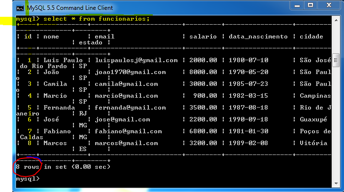
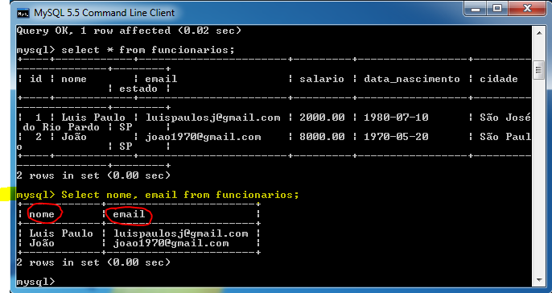
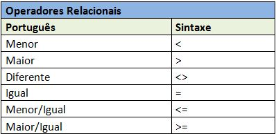
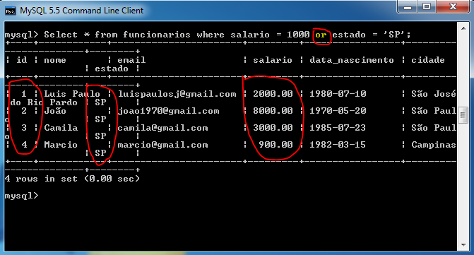
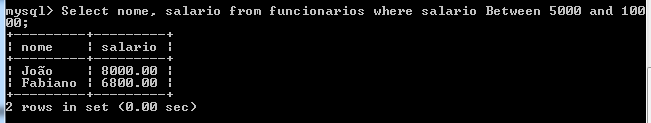
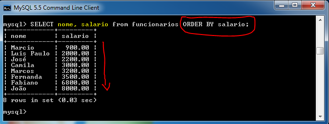
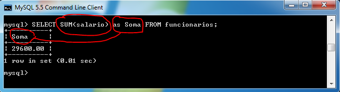
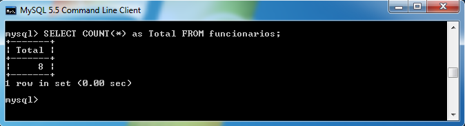

1 - Comandos Básicos com SELECT
- O Select é um comando utilizado para listar os registros de uma tabela
- Para listar todos os registros da tabela devemos utilizar a seguinte sintaxe:
SELECT * FROM funcionarios;

- Observe que o comando nos retornou 8 registros, que são os que forãm inseridos na aula 02.
- Este Terminal não pode ser expandido, portanto algumas colunas podem quebrar para a linha de baixo.
- O asterisco * é utilizado quando queremos listar todos os campos da tabela, ele pode ser substituído pelo nome de um ou vários campos.
2 - Listando campos específicos da tabela
- Para listar determinando campos de uma tabela, você deve substituir o * por um ou mais campos separados por vírgula.
Exemplo:
Select nome, email from funcionarios;

- No exemplo acima ao invés de listarmos todos os campos com o *, listamos apenas os campos nome e email.
- Este comando é importante quando temos tabelas com muitos campos.
- Treine listando apenas determinados campos como: Nome e Salário , Nome - Cidade e Estado, ID -Nome e Data de Nascimento
3 - Utilizando a cláusula Where com Operadores Relacionais:
- A clausula WHERE nos permite refinar ou filtrar um determinado comando SQL

Exemplo 1: Listar nome e salário dos Funcionários que ganham menos de 4000.
Select nome, salario from funcionarios where salario < 4000;
Exemplo 2: Listar nome e salário dos Funcionários que ganham igual a 10000.
Select nome, salario from funcionarios where salario = 10000;
Exemplo 3: Listar nome, salário e estado dos Funcionários do estado de SP;
Select nome, salario, estado from funcionarios where estado='SP';
- Atenção novamente ao uso das aspas nos campos.
Campo salario do tipo Float: sem aspas
Campo estado do tipo Varchar: com aspas
- Treine digitando os exemplos acima.
4 - Utilizando a cláusula Where com Operadores Relacionais e Lógicos
- operador Lógico AND
- Retorna TRUE se todas as condições forem verdadeiras.
Exemplo 1: Select * from funcionarios where salario = 1000 and estado = 'SP';
- a sintaxe acima só irá retornar um resultado somente se as duas comparações forem verdadeiras.

- Observe que ele retornou Empty set (vazio), o que siginifica que umas das condições de comparação é falsa.
- Observe agora o mesmo exemplo utilizando o operador OR
- operador Lógico Or
- Retorna TRUE se uma das condições forem verdadeiras.
Exemplo 1: Select * from funcionarios where salario = 1000 or estado = 'SP';
- a sintaxe acima irá retornar um resultado caso uma das comparações seja verdadeira.

- Observe que ele retornou 4 registros, nenhum registro possui o salário igual a 1000, mas todos são do estado de SP, isso devido a uma comparação ser verdadeira, o que já satisfaz o operador OR.
Outros Exemplos:
Exemplo1: Listar nome, salario, cidade e estado dos funcionários do estado de SP que ganhem mais de 5000 e tenham nascido antes de 1980.
Select nome, salario, cidade, estado from funcionarios where estado='SP' and salario > 5000 and data_nascimento < '1980-01-01';
Exemplo2: Listar nome, cidade e estado dos funcionários do estado de SP e MG
Select nome, cidade, estado from funcionarios where estado='SP' or estado='MG';

5 - Utilizando a cláusula Where com Between
- O Between é utilizado sempre que precisamos listar registros que obedeçam um certo intervado, que estejam entre dois valores.
Exemplos:
-
Listar nome e salário dos funcionarios que ganhem entre 5000 e 10000
Select nome, salario from funcionarios where salario Between 5000 and 10000;

-
Listar os funcionarios de id entre 4 e 7
Select * from funcionarios where id Between 4 and 7;
-
Listar os funcionarios que nasceram entre 1980 e 1990
Select * from funcionarios where data_nascimento Between '1980-01-01' and '1990-12-31';
- Observe que tempo que utilizar a data no formato completo: Ano-Mês-Dia
5 - Utilizando Order By
- O Order By é utilizado para ordenar o resultado de uma consulta, deve sempre ser aplicado a um determinado campo.
- Por exemplo, para ordenarmos o salário do menor para o maior, chamamos de Ascendente.
SELECT nome, salario from funcionarios ORDER BY salario;

- Para ordenarmos do maior para o menor chamamos de Descendente ou como devemos utilizar na sintaxe DESC.
SELECT nome, salario from funcionarios ORDER BY salario DESC;

DICA: o Order by sempre deve ser utilizado no final da sintaxe, funciona tanto para númetos como para textos.
6 - Funções de Agregação: SUM, MAX, MIN, AVG e COUNT
- São funções SQL que permitem executar uma operação aritmética nos valores de uma coluna em todos os registros de uma tabela.
-
Retornam um valor único baseado em um conjunto de valores.
- As funções de agregação devem ser aplicadas a um derteminado campo antes do FROM.
- Você pode utilizar com elas todos os filtros aprendidos com a clausula Where.
- Através do operador AS você pode atribuir um apelido para a Função.
Exemplos:
SUM - utilizado para somar os valores de uma determinada coluna:
SELECT SUM(salario) as Soma FROM funcionarios;

- No exemplo acima ele somou todos os salarios dos funcionários.
MAX - utilizado para listar o Valor Máximo de um conjunto de valores
SELECT MAX(salario) as Maior_Salario FROM funcionarios;

- No exemplo acima ele retornou o maior salário
MIN - utilizado para listar o Valor Mínimo de um conjunto de valores
SELECT MIN(salario) as Menor_Salario FROM funcionarios;

- No exemplo acima ele retornou o menor salário
AVG - utilizado para calcular a Média Aritmética de um conjunto de valores
SELECT AVG(salario) as Media FROM funcionarios;

- No exemplo acima ele retornou a média de todos os salários
COUNT - utilizado para contar os registros em uma tabela.
SELECT COUNT(*) as Total FROM funcionarios;
